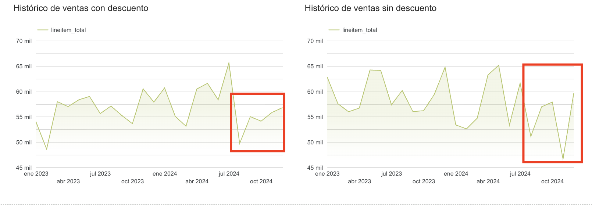

Ecommerce
Performance
Insights
Análisis integral de una tienda Shopify combinando datos de comportamiento (GA4) y datos comerciales.
¿Qué analiza este proyecto?
Dos módulos independientes con fuentes de datos distintas que se complementan.
Vistas, carrito, checkout y compras de productos desde GA4 BigQuery.
Órdenes de Shopify: descuentos, cupones, categorías, tallas y geografía.
Product
Performance
Insights
Se analiza el ciclo completo del producto evaluando eventos de conversión registrados en GA4, desde las vistas hasta las compras, a través del dataset público de Google en BigQuery.
¿Qué busca responder?
Tres ejes centrales guían la exploración de los datos de GA4.
Fuente de datos y transformación
De datos anidados en GA4 a una tabla plana por producto y fecha.
items[]Consulta principal — GA4 BigQuery
Construye la tabla maestra agregando eventos de conversión por producto y fecha.
SELECT
-- Fecha del evento (de YYYYMMDD a DATE)
PARSE_DATE('%Y%m%d', event_date) AS date,
items.item_id AS item_id,
-- Embudo de conversión: eventos → columnas métricas
SUM(CASE WHEN event_name = 'view_item'
THEN IFNULL(items.quantity, 1) ELSE 0 END) AS view_item,
SUM(CASE WHEN event_name = 'add_to_cart'
THEN IFNULL(items.quantity, 1) ELSE 0 END) AS add_to_cart,
SUM(CASE WHEN event_name = 'begin_checkout'
THEN IFNULL(items.quantity, 1) ELSE 0 END) AS begin_checkout,
SUM(CASE WHEN event_name = 'purchase'
THEN IFNULL(items.quantity, 1) ELSE 0 END) AS purchase_item,
SUM(CASE WHEN event_name = 'purchase'
THEN items.item_revenue ELSE 0 END) AS revenue_item
FROM
`bigquery-public-data.ga4_obfuscated_sample_ecommerce.events_*`,
UNNEST(items) AS items
WHERE
REGEXP_EXTRACT(_TABLE_SUFFIX, r"[0-9]+")
BETWEEN FORMAT_DATE("%Y%m%d", "2020-11-01")
AND FORMAT_DATE("%Y%m%d", CURRENT_DATE())
AND items.item_id <> '(not set)'
GROUP BY
PARSE_DATE('%Y%m%d', event_date),
item_idVisualizaciones
Gráficos clave obtenidos del análisis de eventos GA4 en BigQuery.

Entre el 26 dic y el 17 ene se dispararon las vistas sin un incremento proporcional en las ventas.

Men's T-Shirts, Mug, Sale, Clearance y otros 3 están en el top 10 de vistas pero no generan ingresos.

Apparel genera el mayor revenue, pero no es la categoría con más vistas. Oportunidad de visibilidad.
Insights clave
Tres patrones críticos identificados en el comportamiento de productos.
Entre 26 dic – 17 ene aumentaron las vistas sin incremento proporcional en ventas. Alto tráfico, baja conversión.
Men's T-Shirts, Mugs, Sale en top 10 de vistas pero generan cero ingresos. ¿Stock agotado? ¿Canal alternativo?
Apparel genera el mayor revenue pero recibe pocas vistas. Aumentar su visibilidad puede impactar significativamente.
Dashboard interactivo
Visualización del funnel de conversión por producto y categoría en Looker Studio.
Funnel de conversión, análisis de categorías y comparativas de vistas vs. revenue. Responsive para mobile.
Ecommerce
Analytics
Comercial
Datos simulados realistas de una tienda Shopify. El análisis es replicable a cualquier tienda con la misma estructura de exportación de pedidos.
¿Qué se analiza?
Seis dimensiones comerciales exploradas a partir de los datos de órdenes de Shopify.
Flujo de trabajo
Del CSV exportado de Shopify al dashboard interactivo en Looker Studio.
Una fila por orden. ID, cliente, fecha, total, estado de pago, cupón, ciudad.
Una fila por producto. SKU, talla, precio, descuento, categoría, género.
Consulta — Shopify Orders Items
Extrae nombre, talla, género, categoría y clasifica descuentos en 8 rangos.
SELECT
DATE(`Created at`) AS date,
Name AS order_id,
-- Extrae nombre del producto (todo antes del primer guión)
REGEXP_EXTRACT(`Lineitem name`, r'^(.*?) -') AS lineitem_name,
-- Extrae talla (último segmento en MAYÚSCULAS)
REGEXP_EXTRACT(`Lineitem name`, r' - ([A-Z]+)$') AS lineitem_variant,
-- Clasifica género desde el nombre del artículo
CASE
WHEN LOWER(`Lineitem name`) LIKE '%hombre%' THEN 'Hombre'
WHEN LOWER(`Lineitem name`) LIKE '%mujer%' THEN 'Mujer'
ELSE 'Unisex'
END AS genero,
-- Categoría: primera palabra del nombre
REGEXP_EXTRACT(`Lineitem name`, r'^([^\s]+)') AS categoria,
ROUND(`Lineitem price`, 2) AS lineitem_price,
COALESCE(ROUND(`Lineitem compare at price` - `Lineitem price`), 0) AS descuento,
-- Clasifica el % de descuento en 8 rangos
CASE
WHEN (`Lineitem compare at price`-`Lineitem price`)
/`Lineitem compare at price`*100 > 69 THEN 'Descuento mayor a 70%'
WHEN (`Lineitem compare at price`-`Lineitem price`)
/`Lineitem compare at price`*100 > 49 THEN 'Descuento entre 50% y 70%'
WHEN (`Lineitem compare at price`-`Lineitem price`)
/`Lineitem compare at price`*100 > 29 THEN 'Descuento entre 30% y 50%'
WHEN (`Lineitem compare at price`-`Lineitem price`)
/`Lineitem compare at price`*100 > 9 THEN 'Descuento entre 10% y 30%'
ELSE 'Sin descuento'
END AS range_discount
FROM `prueba2-433703.dataset_shopify_orders_download.shopify_orders`Visualizaciones
Gráficos clave extraídos del análisis de la tabla maestra de Shopify.

Los cupones son usados mayormente por el género femenino — sobre todo el de BIENVENIDA — concentrados en Surco y Chorrillos.

Desde julio 2024 se detecta una caída sostenida en ventas con descuento, posiblemente por cambio en estrategia comercial.

La talla M concentra el mayor volumen de ventas en todos los géneros — inventario prioritario en esta talla.

Short y Vestido lideran en volumen con mayor peso Unisex. Alta participación de ventas sin descuento.
Insights clave
Patrones encontrados en el rendimiento comercial del ecommerce Shopify.
Los cupones rinden mejor segmentados por género y zona. El cupón BIENVENIDA es el más usado por mujeres en Surco y Chorrillos.
La talla M concentra el mayor volumen de ventas de forma transversal en todos los géneros. Es la talla crítica del negocio.
El negocio no depende de descuentos para vender. Hay fuerte demanda orgánica, buena percepción de valor y margen para optimizar.
Dashboard interactivo
Análisis comercial completo en Looker Studio con filtros dinámicos.
Descuentos, categorías, cupones, tallas y geografía. Filtros dinámicos por estado, categoría, género y nivel de descuento.
Conclusiones y próximos pasos
· Conectar directamente con la API REST de Shopify para eliminar el CSV manual
· Actualizar query de GA4 en tiempo real usando
CURRENT_DATE() en lugar de fechas hardcodeadas